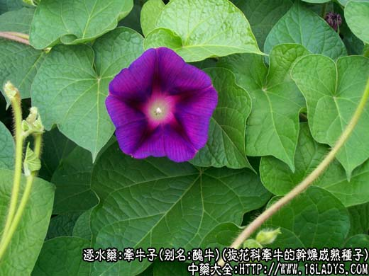
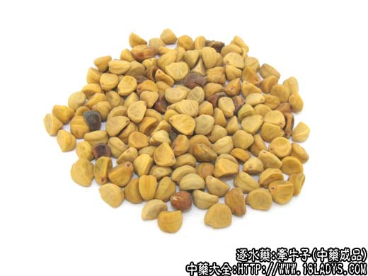
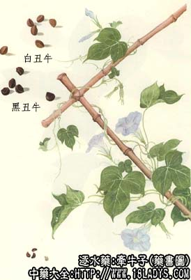

牵牛子始载于《名医别录》。陶弘景曰：此药始出田野，入牵牛谢药，故以名之，李时珍分别称之为黑白丑，以丑属牛之故。
别名：黑丑，白丑，二丑，丑牛，黑牵牛子，白牵牛子。
来源：为旋花科植物裂叶牵牛及圆叶牵牛的干燥成熟种子。野生或栽培。
植物形态：1、裂叶牵牛。一年生缠绕性草本，全株有刺毛，多分枝，叶互生心脏状卵形，通常三裂至中部，全缘。花腋生1～3朵，花冠漏斗状，蓝色，淡紫色或白色，雄蕊五枚，子房圆形，三室，每室胚珠二枚，种子卵形有棱，呈黑褐色，白色或淡黄色。
2、圆叶牵牛（毛牵牛）。与正品略有差别，全株密生白色刺毛。叶片阔心脏形。花腋生1～5朵。花冠较小，紫色，淡红或白色，种子卵状有棱，黑色或黄白色。
产地：全国各地均有生产。
性状鉴别：种子卵形具三棱，长3～5毫米，两侧面稍平坦，或不平坦，背面弓状隆起。腹面为一棱线，棱线下端有类圆形种脐。表面黑色（黑丑），浅黄白色（白丑）。质坚硬。横切面可见极为皱缩而重迭的二片子叶。呈淡黄色，种仁显油性。气无，味微辛辣，有麻舌感，并有豆腥味。以成熟、饱满无杂质者为佳。
主要成分：含牵牛子甙（约2%），为树脂性甙，又称牵牛子脂；此外还有含有脂肪油约11%。
功效与作用：1、泻下。牵牛子脂在肠内遇胆汁和肠液分解出牵牛子素，对肠管有强烈刺激性，增加肠蠕动，引起肠粘膜充血，分泌增加，呈泻下作用。一般服后3小时即泻下，用量大时甚至可泻出水样大便。前人的经验说：“凡用牵牛，少则动大便，多则泻下如水”。属峻泻药。泻时伴有腹痛。传统经验认为黑丑药力较速，白丑药力较缓，现代的实验初步说明：黑白丑的泻下作用没有什么差别（南京药学学报，4：36，1959）。
2、利尿。
3、杀虫。体外试验对蛔虫和绦虫有一定杀灭效果。
炮制：原药炒用，配方时捣碎。
性味：苦寒，有小毒。
归经：入肺、肾、大肠经。
功能：泻下去积，逐水退肿，杀虫。
主治：热结便秘，水肿，蛔虫，绦虫。
临床应用：主要用于逐水消肿，但只适宜于水肿实症，有胀满、便秘，病人体质尚可者。
1、用于治疗肝硬化腹水。配大黄、芒硝、枳实，如消水方，此方去水较满意，泻三、四次后，腹水显著消退。
2、用于治疗肾性水肿。慢性肾炎肾变性期的水肿，可用黑丑30～60g（成人量）与其它泻水、温肾药同用；或用舟车丸（黑丑、甘遂、芫花、大戟、大黄、青皮、陈皮、木香、槟榔、轻粉）逐水。
此外，也可用于治疗虫积（由蛔虫病所致的便秘等症状），舌上有碎米样的红点，口苦苔黄，小便黄短，用黑丑9g（炒），槟榔15g，研成细末，每服6g，开水冲服，或在其它驱蛔方剂内酌加黑丑亦可，但要慎用。
使用注意：1、逐水消胆时如使用牵牛子，要注意攻补兼施，或攻后即补。凡体质虚弱、老人或孕妇，均忌用牵牛子；腹不胀满，或无便秒者也不要轻易使用。
2、牵牛子在常用量下不致中毒，但如过量（例如儿童子用30g以上）可中毒，出现神经症状、血尿、大便有粘液、剧烈腹痛、呕吐。
用量：常用量粉剂1.5～4.5g，大剂量酌情用至12～15g。入汤剂量可稍大，用至24～30g。
处方举例：消水方：黑牵牛24g（研末，冲），大黄15g（后下），元明粉12g（冲），枳实9g，水煎服。如体质虚弱，或服后泻下太历害，可用枣汤调服（大枣30g煎汤）。又此方不可久服，得效便止。
注：1、开白花者种子为白丑；开红紫色花者种子为黑丑。
2、裂叶牵牛的种子一般较圆叶牵牛的种子稍大，且三棱明显。